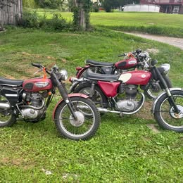
Triumphs
213 listings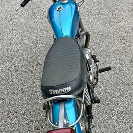
$2,500
1971 Triumph TR6R Tiger
Facebook Marketplace · Millersville, MD
Listed Sep 24, 2026
View listing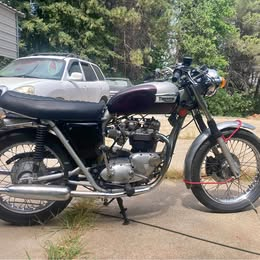
$2,500
1973 Triumph Bonnieville 750
Facebook Marketplace · Penn Valley, CA
Listed Sep 24, 2026
View listing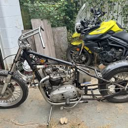
$2,800
1970 Triumph 750 T140V five speed
Facebook Marketplace · Louisville, KY
Listed Sep 24, 2026
View listing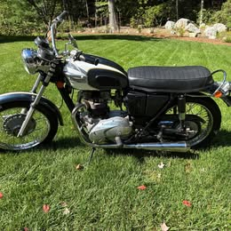
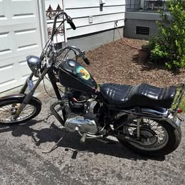
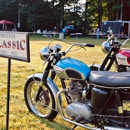
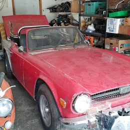
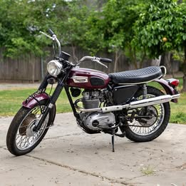
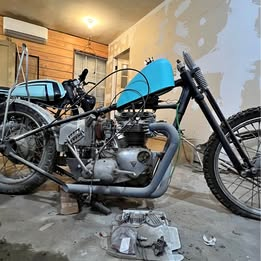
$3,200
1967 Triumph TR6 Trophy 650
Facebook Marketplace · New Orleans, LA
Listed Sep 24, 2026
View listing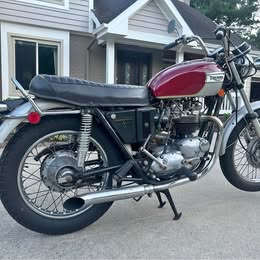
$3,200
1972 Triumph bonneville v
Facebook Marketplace · Loveland, OH
Listed Sep 24, 2026
View listing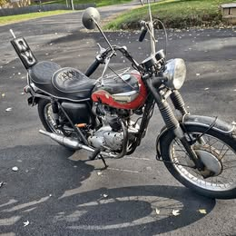
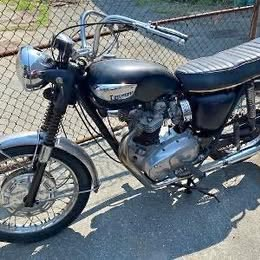
$3,500
1968 Triumph bonneville
Facebook Marketplace · Arlington, MA
Listed Sep 24, 2026
View listing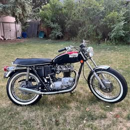
$3,500
1972 Bonneville Triumph 650
Facebook Marketplace · Billings, MT
Listed Sep 24, 2026
View listing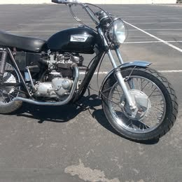
$3,600
1972 Triumph bonneville t120v 650
Facebook Marketplace · Apache Junction, AZ
Listed Sep 24, 2026
View listing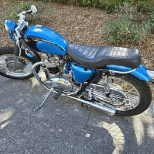
$3,700
1967 Triumph bonneville
Facebook Marketplace · Apollo Beach, FL
Listed Sep 24, 2026
View listing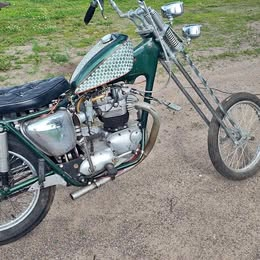
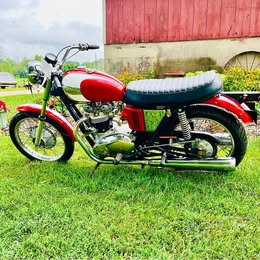
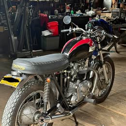
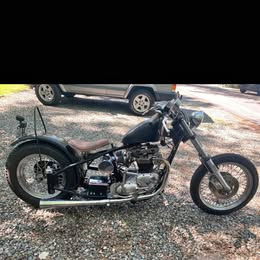
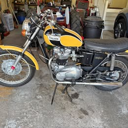
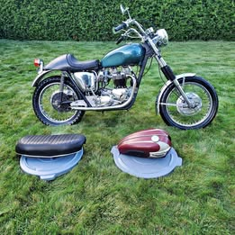
$3,999
1970 TRIUMPH BONNEVILLE T120 650CC ONLY 6245 ORIGINAL MILES SURVIVOR
Facebook Marketplace · Paramus, NJ
Listed Sep 24, 2026
View listing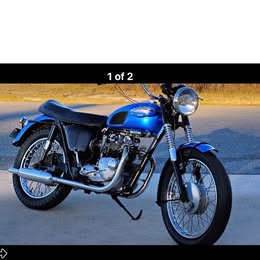
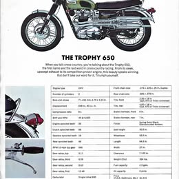
$4,000
1970 Triumph tr6 trophy 650
Facebook Marketplace · McMinnville, OR
Listed Sep 24, 2026
View listing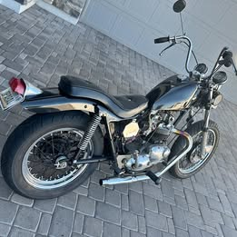
$4,000
1971 Triumph 750 bonniville
Facebook Marketplace · Queen Creek, AZ
Listed Sep 24, 2026
View listing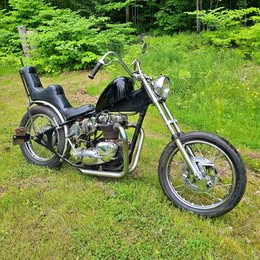
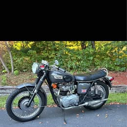
$4,200
1971 Triumph bonneville
Facebook Marketplace · Dahlonega, GA
Listed Sep 24, 2026
View listing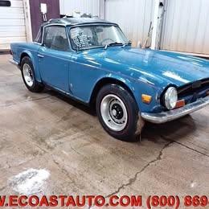
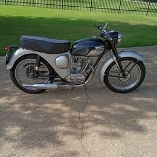
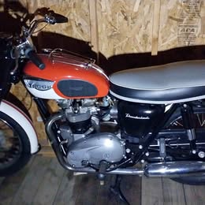
$4,500
1966 Triumph Thunder Bird.
Facebook Marketplace · Dayton, OH
Listed Sep 24, 2026
View listing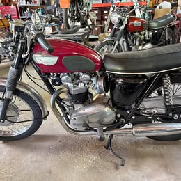
$4,500
1967 T120 Triumph Bonneville
Facebook Marketplace · Cheshire, CT
Listed Sep 24, 2026
View listing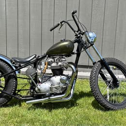

$4,600
1966 Trimuph TR6
Facebook Marketplace · South Lake Tahoe, CA
Listed Sep 24, 2026
View listing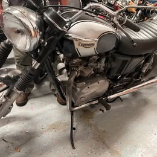
$4,755
1973 Triumph bonneville
Facebook Marketplace · South Daytona, FL
Listed Sep 24, 2026
View listing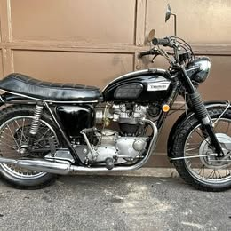
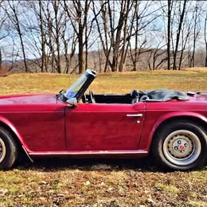
$4,900
1973 Triumph tr6 convertible · Convertible
Facebook Marketplace · Chester, NJ
Listed Sep 24, 2026
View listing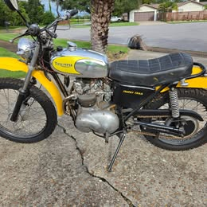
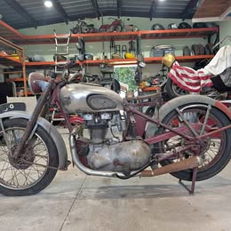
$5,000
1946 Triumph Speed Twin
Facebook Marketplace · Inverness, FL
Listed Sep 24, 2026
View listing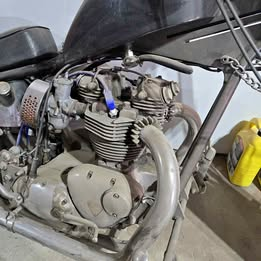
$5,000
1967 Triumph Hardtail Chopper
Facebook Marketplace · Englewood, CO
Listed Sep 24, 2026
View listing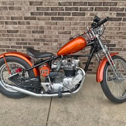
$5,000
1967 Triumph bonneville bobber
Facebook Marketplace · Newport, OH
Listed Sep 24, 2026
View listing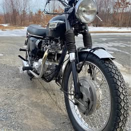
$5,000
1968 triumph Bonneville 650
Facebook Marketplace · Fitchburg, MA
Listed Sep 24, 2026
View listing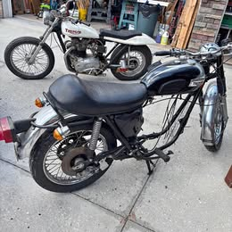
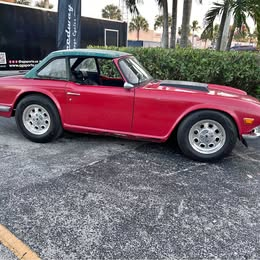
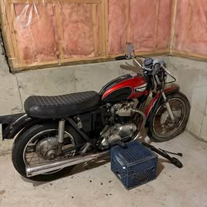
$5,000
1972 Triumph Bonneville
Facebook Marketplace · Rochester, NH
Listed Sep 24, 2026
View listing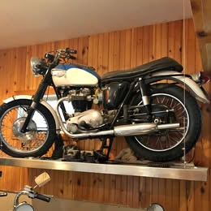
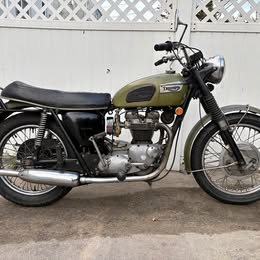
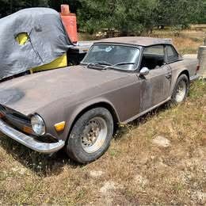
$5,200
1973 Triumph TR6 · Overdrive
Facebook Marketplace · Forestville, CA
Listed Sep 24, 2026
View listing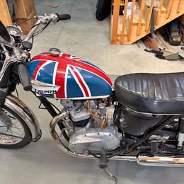
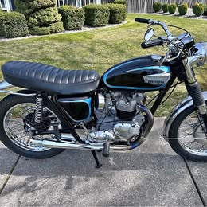
$5,500
1966 Triumph Bonneville T120
Facebook Marketplace · Coeur D'Alene, ID
Listed Sep 24, 2026
View listing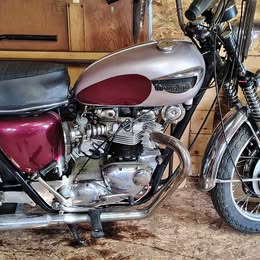
$5,500
1966 Triumph 650 Bonneville
Facebook Marketplace · Castalia, OH
Listed Sep 24, 2026
View listing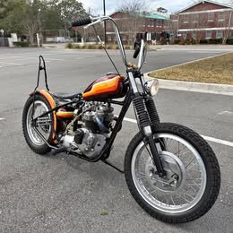
$5,500
1966 Triumph bonneville
Facebook Marketplace · Jacksonville, FL
Listed Sep 24, 2026
View listing$5,500
1967 Triumph 650 Bonneville T120R
Facebook Marketplace · Bloomfield Hills, MI
Listed Sep 24, 2026
View listing$5,500
1968 Triumph Bonneville 650 CC Mechanic Special
Facebook Marketplace · Pompano Beach, FL
Listed Sep 24, 2026
View listing$5,550
Factory+OEM+1969-1976+Triumph+TR6+Hardtop+
Facebook Marketplace · Chandler, AZ
Listed Sep 24, 2026
View listing$6,200
1973 Triumph tr6 · Base
Facebook Marketplace · New London, WI
Listed Sep 24, 2026
View listing$6,250
Vintage 1971 Triumph TR6C , Trackmaster, super clean
Facebook Marketplace · La Center, WA
Listed Sep 24, 2026
View listing$6,495
1963 Triumph 6T Thunderbird 650
Facebook Marketplace · Stephens City, VA
Listed Sep 24, 2026
View listing$6,500
1966 T120 Triumph Bonneville
Facebook Marketplace · Acworth, GA
Listed Sep 24, 2026
View listing$6,500
1968 Triumph Bonneville
Facebook Marketplace · Lambertville, MI
Listed Sep 24, 2026
View listing$6,500
1969 Triumph Bonneville
Facebook Marketplace · Interlochen, MI
Listed Sep 24, 2026
View listing$6,800
1964 Triumph Bonneville
Facebook Marketplace · Sebastopol, CA
Listed Sep 24, 2026
View listing$6,900
1968 Triumph Bonneville T120R 650 – Matching Numbers – Vintage Custom
Facebook Marketplace · Jamul, CA
Listed Sep 24, 2026
View listing$7,000
1969 Triumph Triumph Bonneville T 120
Facebook Marketplace · Tulsa, OK
Listed Sep 24, 2026
View listing$7,000
1970 Triumph Bonneville
Facebook Marketplace · Independence, MO
Listed Sep 24, 2026
View listing$7,000
1970 Triumph tr6 Tr6 and older roadster
Facebook Marketplace · Claremont, NH
Listed Sep 24, 2026
View listing$7,500
1967 Bonneville Triumph
Facebook Marketplace · Sutherlin, OR
Listed Sep 24, 2026
View listing$7,500
1973 Triumph 750 Bonneville
Facebook Marketplace · Pilot Point, TX
Listed Sep 24, 2026
View listing$7,995
1970 Triumph 650cc tr6
Facebook Marketplace · Minneapolis, MN
Listed Sep 24, 2026
View listing$8,000
1962 Triumph pre-unit original paint,
Facebook Marketplace · Corona, CA
Listed Sep 24, 2026
View listing$8,000
Selling for my pap 1965 triumph that has had everything rebuilt ready to go runs great. $8,000
Facebook Marketplace · Morgantown, WV
Listed Sep 24, 2026
View listing$8,000
1966+triumph+bonneville+750
Facebook Marketplace · Washougal, WA
Listed Sep 24, 2026
View listing$8,000
1970 Triumph tiger tr6 650cc
Facebook Marketplace · Woodinville, WA
Listed Sep 24, 2026
View listing$8,000
1972 Truimph tr6 · Black
Facebook Marketplace · Huntingtown, MD
Listed Sep 24, 2026
View listing$8,500
1960 Triumph tr6a dragster
Facebook Marketplace · West Palm Beach, FL
Listed Sep 24, 2026
View listing$9,000
1963 Triton custom norton/triumph 650
Facebook Marketplace · Murrieta, CA
Listed Sep 24, 2026
View listing$9,000
1967 Triumph bonneville 650
Facebook Marketplace · Daytona Beach, FL
Listed Sep 24, 2026
View listing$9,200
1970 Triumph Motorcycle T120R Bonneville
Facebook Marketplace · St Cloud, FL
Listed Sep 24, 2026
View listing$9,500
1967 triumph tr6c motorcycle
Facebook Marketplace · Nevada City, CA
Listed Sep 24, 2026
View listing$9,800
1973 Triumph street tracker
Facebook Marketplace · Chico, CA
Listed Sep 24, 2026
View listing$9,900
1967 Triumph 650 Bonneville
Facebook Marketplace · Chewelah, WA
Listed Sep 24, 2026
View listing
$4,000
1973 Triumph 750 bonneville
Facebook Marketplace · La Mesa, CA
Listed Sep 24, 2026
View listing

$9,900
1967 Triumph bonneville 650
Facebook Marketplace · Bakersfield, CA
Listed Sep 22, 2026
View listing
$7,000
Triumph TR6C 1970 - project bike
Facebook Marketplace · Tustin, CA
Listed Sep 21, 2026
View listing


$3,700
1948 triumph pre unit twin
Facebook Marketplace · Ventura, CA
Listed Sep 17, 2026
View listing
$3,600
1968 TR6C running motor 1970 chassis Triumph motorcycle desert sled
Facebook Marketplace · Huntington Beach, CA
Listed Sep 17, 2026
View listing


$3,000
1964 TRIUMPH 220S TIGER CUB
Facebook Marketplace · Camas, WA
Listed Aug 27, 2026
View listing


$2,200
1966 Triumph Chopper Roller (with title)
Facebook Marketplace · Las Vegas, NV
Listed Jul 23, 2026
View listing
$5,000
1970 Triumph t120r+bonneville
Facebook Marketplace · Port Townsend, WA
Listed Jun 4, 2026
View listing
$4,250
1972 Triumph t120 bonneville 650
Facebook Marketplace · Sun City, AZ
Listed Apr 23, 2026
View listing$3,500
1965 Triumph triumph trophy
Facebook Marketplace · St Augustine, FL
Listed Sep 23, 2026
View listing$3,500
1972 Triumph bonneville
Facebook Marketplace · Royse City, TX
Listed Sep 23, 2026
View listing$4,000
1968 Triumph TR6R trophy sport m/c
Facebook Marketplace · Arlington Heights, IL
Listed Sep 23, 2026
View listing$4,250
1971 Triumph bonneville
Facebook Marketplace · Fort Smith, AR
Listed Sep 23, 2026
View listing$4,295
1957 Triumph t20 tiger cub
Facebook Marketplace · Brookings, OR
Listed Sep 23, 2026
View listing$4,900
1967 Triumph Chopper T120 650cc Runs Strong / Clean Title / Kickstart
Facebook Marketplace · Portland, OR
Listed Sep 23, 2026
View listing$5,000
1971 Triumph TR6 Custom Bike
Facebook Marketplace · Dunlap, TN
Listed Sep 23, 2026
View listing$5,500
1971 Triumph hard tail custom
Facebook Marketplace · Cary, IL
Listed Sep 23, 2026
View listing$5,850
1971 Triumph bonneville
Facebook Marketplace · Wilkesboro, NC
Listed Sep 23, 2026
View listing$6,000
1972 Vintage Triumph Bonneville Motorcycle
Facebook Marketplace · Atlanta, GA
Listed Sep 23, 2026
View listing$6,200
1967 Triumph tiger 650 (tr6r)
Facebook Marketplace · Alpharetta, GA
Listed Sep 23, 2026
View listing$6,500
1970 Triumph bonneville t120r
Facebook Marketplace · Novato, CA
Listed Sep 23, 2026
View listing$7,500
1965 Triumph T100 500cc twin
Facebook Marketplace · Portland, OR
Listed Sep 23, 2026
View listing$8,100
1952 Triumph Bonneville Motorcycle - Custom Restored
Facebook Marketplace · Ashland, NE
Listed Sep 23, 2026
View listing$8,900
1970 Triumph t120 bonneville
Facebook Marketplace · Granite Falls, NC
Listed Sep 23, 2026
View listing


$4,000
1968 T 100 R 500 Daytona SuperSport Motorcycle
Facebook Marketplace · Redding, CA
View listing


$6,000
Custom 1969 Triumph Bonnie 650 Chopper Motorcycle
Facebook Marketplace · Omaha, NE
View listing


$3,500
1969 Triumph Bonneville T120R
Bring a Trailer · Philadelphia, Pennsylvania 19124
Closes Sep 30, 2026 · 10:49 AM PT
View listing
$5,000
No Reserve: 1968 Triumph Bonneville T120R
Bring a Trailer
Closes Sep 23, 2026 · 10:52 AM PT
View listing
Ford trucks
661 listings


$3,900
1969 Ford F-500 Heavy Duty Dump only 57,000 Miles
Craigslist · Glendale
Listed Sep 23, 2026
View listing
$5,500
1967 Ford f-250 HD Long Bed
Facebook Marketplace · Las Vegas, NV
Listed Sep 23, 2026
View listing
$4,000
1965 Ford f-100 Custom Cab
Facebook Marketplace · Laguna, NM
Listed Sep 22, 2026
View listing


$6,500
1965 Ford f-250 Long Bed
Facebook Marketplace · West Jordan, UT
Listed Sep 22, 2026
View listing


$7,000
1970 Ford f250 camper special
Facebook Marketplace · Duvall, WA
Listed Sep 22, 2026
View listing

$7,200
1966 Ford f150 regular cab Long Bed
Facebook Marketplace · Tucson, AZ
Listed Sep 22, 2026
View listing
$7,200
1970 Ford f250 regular cab Long Bed
Facebook Marketplace · Vancouver, WA
Listed Sep 22, 2026
View listing
$7,500
1966 Ford f250 regular cab Camper special
Facebook Marketplace · Preston, ID
Listed Sep 22, 2026
View listing
$7,750
1963 Ford f-250 Long Bed
Facebook Marketplace · Paradise, CA
Listed Sep 22, 2026
View listing
$8,000
1965 Ford f-250 Long Bed
Facebook Marketplace · Calistoga, CA
Listed Sep 22, 2026
View listing

$8,000
1970 Ford f-250 Camper special
Facebook Marketplace · Lake Stevens, WA
Listed Sep 22, 2026
View listing
$8,500
1958 Ford f100 Custom
Facebook Marketplace · Channelview, TX
Listed Sep 22, 2026
View listing

$8,500
1970 Ford f-250 Camper special
Facebook Marketplace · Indianapolis, IN
Listed Sep 22, 2026
View listing
$8,500
1973 Ford f-250 HD Long Bed
Facebook Marketplace · Tucson, AZ
Listed Sep 22, 2026
View listing
$10,000
1955 Ford f-550 141 inch W.B. 2D
Facebook Marketplace · Arroyo Grande, CA
Listed Sep 22, 2026
View listing

$11,500
1964 Ford f1 Custom 4x4
Facebook Marketplace · Lakeside, AZ
Listed Sep 22, 2026
View listing
$12,000
1959 Ford f250 regular cab Long Bed
Facebook Marketplace · Alliance, NE
Listed Sep 22, 2026
View listing
$12,000
1966 Ford f250 regular cab Custom Cab
Facebook Marketplace · Solvang, CA
Listed Sep 22, 2026
View listing


$12,500
1966 Ford f250 regular cab Long Bed
Facebook Marketplace · Norfolk, NE
Listed Sep 22, 2026
View listing
$12,500
1967 Ford f-250 Long Bed
Facebook Marketplace · Saratoga Springs, UT
Listed Sep 22, 2026
View listing
$12,500
1969 Ford f-250 Camper Special
Facebook Marketplace · Tulsa, OK
Listed Sep 22, 2026
View listing

$12,995
1967 Ford f-250 Long Bed
Facebook Marketplace · Virginia City, MT
Listed Sep 22, 2026
View listing


$14,000
1970 Ford f-250
Facebook Marketplace · Owens Cross Roads, AL
Listed Sep 22, 2026
View listing
$14,000
1970 Ford f-250 Long Bed
Facebook Marketplace · Huntsville, AL
Listed Sep 22, 2026
View listing


$14,900
1972 Ford ranger Long Bed
Facebook Marketplace · Lenoir City, TN
Listed Sep 22, 2026
View listing


$16,900
1930 Ford panel truck / sedan delivery
Facebook Marketplace · Springfield, IL
Listed Sep 22, 2026
View listing


$19,500
1966 Ford f250 custom cab
Facebook Marketplace · Folsom, CA
Listed Sep 22, 2026
View listing
$21,500
1966 Ford f100 Custom
Facebook Marketplace · Morgan Hill, CA
Listed Sep 22, 2026
View listing
$23,900
1964 Ford f-250 HD Long Bed
Facebook Marketplace · Mayville, MI
Listed Sep 22, 2026
View listing
$25,000
1963 Ford f250 regular cab Long Bed
Facebook Marketplace · Fox Island, WA
Listed Sep 22, 2026
View listing


$27,000
1965 Ford f-100 flareside
Facebook Marketplace · San Jose, CA
Listed Sep 22, 2026
View listing


$22,500
1929 Ford Hot Rod Roadster Pick-Up
Craigslist · St Helens Oregon
Listed Sep 15, 2026
View listing

$4,900
1969 Ford F-500 Heavy Duty Dump only 57,000 Miles
Craigslist · Glendale
Listed Sep 14, 2026
View listing


$6,000
1961 Ford F-150 - Manual - Runs - 70k original miles
Craigslist · san rafael
Listed Sep 1, 2026
View listing


$4,750
1963 Ford f-150 Long Bed
Facebook Marketplace · Fort Scott, KS
Listed Sep 23, 2026
View listing$4,800
1968 Ford f-250 HD Long Bed
Facebook Marketplace · Scotts Valley, CA
Listed Sep 23, 2026
View listing$5,000
1966 Ford f-250 Long Bed
Facebook Marketplace · Silverdale, WA
Listed Sep 23, 2026
View listing$5,000
1966 Ford f-250 Long Bed
Facebook Marketplace · Meridian, ID
Listed Sep 23, 2026
View listing$5,500
1972 Ford f-350 XL Pickup 2D 8 ft
Facebook Marketplace · Mooresville, NC
Listed Sep 23, 2026
View listing$6,000
1968 Ford f150 heritage regular cab XL Pickup
Facebook Marketplace · Ferris, TX
Listed Sep 23, 2026
View listing$6,500
1965 Ford f250 regular cab Long Bed
Facebook Marketplace · Bend, OR
Listed Sep 23, 2026
View listing$7,000
1967 Ford F100 pick up
Facebook Marketplace · Fort Collins, CO
Listed Sep 23, 2026
View listing$7,400
1970 Ford f250 camper special xlt
Facebook Marketplace · Shoreline, WA
Listed Sep 23, 2026
View listing$7,500
1966 Ford pick up long bed 352 three speed manual
Facebook Marketplace · Tacoma, WA
Listed Sep 23, 2026
View listing$7,850
1968 Ford f250 ford ranger-camper special
Facebook Marketplace · Senoia, GA
Listed Sep 23, 2026
View listing$8,000
1969 Ford f-150 Short Bed
Facebook Marketplace · Modesto, CA
Listed Sep 23, 2026
View listing$8,000
1971 Ford f100 Sports custom
Facebook Marketplace · Alto, GA
Listed Sep 23, 2026
View listing$8,000
1972 Ford f100 Custom
Facebook Marketplace · Grand Junction, CO
Listed Sep 23, 2026
View listing$8,500
1968 Ford f1 Ranger
Facebook Marketplace · Colorado Springs, CO
Listed Sep 23, 2026
View listing$8,500
1970 Ford f 100 Custom Cab
Facebook Marketplace · La Fayette, GA
Listed Sep 23, 2026
View listing$8,500
1972 Ford f100 Short Bed Truck
Facebook Marketplace · Sarasota, FL
Listed Sep 23, 2026
View listing$9,000
1969 Ford f250 regular cab Long Bed
Facebook Marketplace · Eureka, UT
Listed Sep 23, 2026
View listing$9,000
1970 Ford f350 regular cab
Facebook Marketplace · Fontana, CA
Listed Sep 23, 2026
View listing$9,200
1969 Ford f-250 Long Bed
Facebook Marketplace · Larkspur, CO
Listed Sep 23, 2026
View listing$9,500
1973 Ford f-350 XLT Pickup 2D 8 ft
Facebook Marketplace · Everett, WA
Listed Sep 23, 2026
View listing$10,000
1971 Ford f250 super cab HD Long Bed
Facebook Marketplace · Airway Heights, WA
Listed Sep 23, 2026
View listing$10,000
1971 Ford Truck
Facebook Marketplace · Colorado Springs, CO
Listed Sep 23, 2026
View listing$12,000
1960 Ford F-100 with F350 turbo swap
Facebook Marketplace · Bailey, NC
Listed Sep 23, 2026
View listing$12,000
1964 Ford F250 Long Bed
Facebook Marketplace · Hempstead, TX
Listed Sep 23, 2026
View listing$12,000
1966 Ford f-250 Long Bed
Facebook Marketplace · San Marcos, TX
Listed Sep 23, 2026
View listing$12,000
1970 Ford F-250 Ranger Pickup Truck
Facebook Marketplace · Castle Rock, CO
Listed Sep 23, 2026
View listing$12,000
1971 Ford f100 Long Bed
Facebook Marketplace · Simi Valley, CA
Listed Sep 23, 2026
View listing$12,500
1967 Ford f-250 HD Long Bed
Facebook Marketplace · Fresno, CA
Listed Sep 23, 2026
View listing$12,500
1967 Ford f-100
Facebook Marketplace · Colorado Springs, CO
Listed Sep 23, 2026
View listing$12,500
1969 Ford F250 Custom Cab
Facebook Marketplace · Manchaca, TX
Listed Sep 23, 2026
View listing$13,500
1968 Ford f100 short wide pickup
Facebook Marketplace · Jenkinsburg, GA
Listed Sep 23, 2026
View listing
$13,900
1967 Ford F-100 4x4 V8 Manual Transmission - Classic Patina - Runs & Drives
Facebook Marketplace · Alvarado, TX
Listed Sep 23, 2026
View listing$13,999
1971 Ford f-250 camper special sport custom original
Facebook Marketplace · San Antonio, TX
Listed Sep 23, 2026
View listing$14,000
1969 ford f100 Ranger
Facebook Marketplace · San Antonio, TX
Listed Sep 23, 2026
View listing$15,000
1968 Ford f-150 Long Bed
Facebook Marketplace · Lebanon, OR
Listed Sep 23, 2026
View listing$15,000
1971 Ford f100 short bed
Facebook Marketplace · Apple Valley, CA
Listed Sep 23, 2026
View listing$15,500
1970 Ford F-100 Sport Custom Texas Truck with factory AC
Facebook Marketplace · Corbin, KY
Listed Sep 23, 2026
View listing$15,500
1971 Ford f100 Short bed 4x4
Facebook Marketplace · Fort Collins, CO
Listed Sep 23, 2026
View listing$16,000
1966 Ford f-250 Long Bed
Facebook Marketplace · Springfield, OR
Listed Sep 23, 2026
View listing$16,500
1966 Ford f-250 HD Long Bed
Facebook Marketplace · Lockport, NY
Listed Sep 23, 2026
View listing$17,000
1968 Ford f-250 Long Bed
Facebook Marketplace · Quinlan, TX
Listed Sep 23, 2026
View listing$17,995
1969 Ford f-150 Ranger
Facebook Marketplace · Buckeye Lake, OH
Listed Sep 23, 2026
View listing$18,500
1972 Ford f-250 Long Bed
Facebook Marketplace · Mountain View, CA
Listed Sep 23, 2026
View listing$19,000
1968 Ford f-250 Long Bed
Facebook Marketplace · Quinlan, TX
Listed Sep 23, 2026
View listing$22,000
1968 Ford f-250 camper special
Facebook Marketplace · Ballwin, MO
Listed Sep 23, 2026
View listing$22,000
1971 Ford f250 regular cab Long Bed
Facebook Marketplace · Willits, CA
Listed Sep 23, 2026
View listing$22,750
1969 Ford f100 custom cab
Facebook Marketplace · Jurupa Valley, CA
Listed Sep 23, 2026
View listing$25,000
1968 Ford f-100 ranger short bed
Facebook Marketplace · Bellingham, WA
Listed Sep 23, 2026
View listing$25,000
1972 Ford f250 regular cab Camper special
Facebook Marketplace · Edinburg, TX
Listed Sep 23, 2026
View listing$26,000
Classic Pickup Truck 1972 Ford, F-250
Facebook Marketplace · Inglewood, CA
Listed Sep 23, 2026
View listing$3,000
No Reserve: 1971 Ford F-100 Custom 4-Speed
Bring a Trailer · Coburg, Oregon 97408 Bring a Trailer Verified Checkout Available
Closes Sep 30, 2026 · 12:20 PM PT
View listing

$6,000
No Reserve: 390-Powered 1975 Ford F-250 Highboy Custom 4×4
Bring a Trailer · Helena, Montana 59602
Closes Sep 29, 2026 · 12:52 PM PT
View listing$6,000
Fuel-Injected 1977 Ford F-150 Ranger XLT 4x4
Bring a Trailer · United States
Closes Sep 24, 2026 · 12:32 PM PT
View listing
$9,500
No Reserve: 1965 Ford F-250 4x4 4-Speed Conversion
Bring a Trailer
Closes Sep 25, 2026 · 1:20 PM PT
View listing$10,000
No Reserve: 1978 Ford F-150 Custom 4×4
Bring a Trailer · Enumclaw, Washington 98022 Bring a Trailer Verified Checkout Available
Closes Sep 28, 2026 · 10:36 AM PT
View listing$13,000
1978 Ford F-150 Ranger Flareside 4x4
Bring a Trailer · Olympia, Washington 98501 Bring a Trailer Verified Checkout Available
Closes Sep 30, 2026 · 2:06 PM PT
View listing
$15,000
351-Powered 1965 Ford F-100 Custom Styleside Pickup
Bring a Trailer
Closes Sep 24, 2026 · 11:51 AM PT
View listing
$15,000
Fuel-Injected, Chevy 406-Powered 1966 Ford F-100 w/Custom Travel Trailer
Bring a Trailer
Closes Sep 23, 2026 · 1:03 PM PT
View listing
$15,550
292-Powered 1933 Ford Series 46 Pickup
Bring a Trailer
Closes Sep 24, 2026 · 12:51 PM PT
View listing

$21,500
Supercharged 408ci-Powered 1977 Ford F-100 Flareside 6-Speed
Bring a Trailer · Stacy, Minnesota 55079
Closes Sep 25, 2026 · 1:37 PM PT
View listing$25,555
1976 Ford F-250 Custom Highboy 4×4 4-Speed
Bring a Trailer · Salem, Oregon 97304
Closes Sep 29, 2026 · 11:25 AM PT
View listing